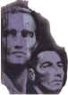

|
Humphrey
Bogart(1899-1957)
Of all my favorite actors, Humphrey Bogart is probably the last one I
would have picked to come from upper crust origins. Born in New York City,
his father a surgeon, Bogart was educated in private and prep schools, but
maybe it was his expulsion from Phillips Academy that signaled some sense
of his screen persona. Bogart went directly into the Navy where a wound
caused the partial lip paralysis that became a signature of Bogart's tough
guy delivery.
Bogart's Hollywood career was launched in 1928's The
Dancing Town, but he labored for years in supporting roles before
breaking out as a bonafide star. It was probably in The Petrified
Forest as Duke Mantee, the gangster with a loose screw, that
threw the brightest light on Bogie's early career. In Dead End
he made supporting waves as Baby Face Martin and he lent support to James
Cagney in Angels with Dirty Faces. They Drive by
Night was another excellent showcase for Bogie's talents, but it
wasn't until The Maltese Falcon that Hollywood realized
he was something special. He followed that up in quick succession with High
Sierra as Mad Dog Earle and Rick in Casablanca.
He stayed on top of the pack until his untimely death from throat cancer.
Click
on the thumbnail images for larger views.
|
|

The Feature Archive has articles ranging from Akira Kurosawa to Blonde Bimbos.
Movie Rage: Death in the Aisles
Everyone knows what it feels like to get angry at the movies
these days. Here's a humorous but not so delightful view of big screen
misery.


BargainFlix doesn't sell movies! We just tell you where to get them
for the best price! DVD reviews, giveaways and more.

ISF Monitor
Calibrations in the Tristate New York area. Lots of hardware
info and frequent hardware peaks from video expert Kevin Miller. They may
be judgmental, but that's the point, isn't it. Lots of DVD reviews plus
news and more.

A home theater site filled with a host of useful information, including
links to many other site.
Werner Herzog Film
![[ Werner Herzog ]](../images/werner-herzog.jpg)
The Web site of director Werner Herzog includes lots of great material. A
perfect stop for anyone who admires his films.

Manufacturer of computer-video interfaces, switchers, distribution
amplifiers, computer-video scan converters, and high resolution cable.
Found in many high end home theater systems.
MRQE
Find reams of movie and DVD reviews at the Movie Review Query
Engine, a index of reviews appearing on the Internet.

Le Trou/ A-,A-

Outstanding prison escape procedural,. Le Trou is filmed with
stunning determination. A beautiful transfer from very good sources
elements. Black and white with subs.
|